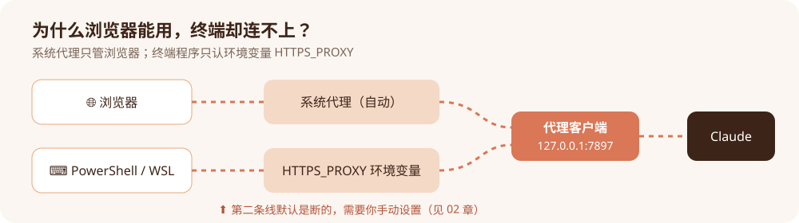

02 · 终端永久代理配置¶

浏览器走的是系统代理，而终端里的程序（包括 Claude Code）只读取 HTTP_PROXY / HTTPS_PROXY 环境变量。因此即使浏览器能正常访问，终端也需要单独配置。
本章为每种终端给出 生效范围 → 配置步骤 → 验证 → 撤销 四个部分，按自己使用的终端阅读即可。
开始之前：确认代理端口¶
打开代理客户端的设置，找到 HTTP 端口 或 Mixed（混合）端口，下文统一以 7890 为例，请替换为你自己的端口。
| 常见客户端 | 默认端口 |
|---|---|
| Clash Verge / Clash for Windows / Mihomo | 7890（Mixed） |
| v2rayN | 10809（HTTP），10808 为 SOCKS |
| Shadowrocket / Surge（macOS） | 以客户端设置页显示为准 |
Important
Claude Code 不支持 SOCKS5，必须填写 HTTP 或 Mixed 端口。
选择你的终端¶
| 终端 | 跳转 | 说明 |
|---|---|---|
| PowerShell / CMD / Git Bash（Windows） | Windows 终端 | 三者共用 Windows 用户环境变量，配置一次即可 |
| WSL | WSL | 独立的 Linux 环境，不继承 Windows 的环境变量，需要单独配置 |
| macOS / Linux | macOS / Linux | 写入 shell 配置文件 |
| 仅 Claude Code | Claude Code 专用配置 | 与终端无关，作为兜底方案 |
Windows 终端¶
生效范围： 写入 Windows 用户环境变量后，之后新打开的 PowerShell、CMD、Git Bash、Windows Terminal、VS Code 都会自动继承，无需分别配置。已经打开的窗口不会更新，WSL 也不受影响。
配置步骤¶
方式一：脚本（在仓库根目录的 PowerShell 中执行）
方式二：手动（PowerShell 中逐行执行，无需管理员权限）
$p = 'http://127.0.0.1:7890'
[Environment]::SetEnvironmentVariable('HTTP_PROXY', $p, 'User')
[Environment]::SetEnvironmentVariable('HTTPS_PROXY', $p, 'User')
[Environment]::SetEnvironmentVariable('ALL_PROXY', $p, 'User')
[Environment]::SetEnvironmentVariable('NO_PROXY', 'localhost,127.0.0.1,::1', 'User')
如果习惯用 CMD，以下命令效果相同：
setx HTTP_PROXY http://127.0.0.1:7890
setx HTTPS_PROXY http://127.0.0.1:7890
setx ALL_PROXY http://127.0.0.1:7890
setx NO_PROXY localhost,127.0.0.1,::1
方式三：图形界面
Win + R 输入 rundll32 sysdm.cpl,EditEnvironmentVariables → 在“用户变量”中新建 HTTP_PROXY、HTTPS_PROXY，值均为 http://127.0.0.1:7890。
最后一步（必做）： 关闭所有 PowerShell、CMD、Windows Terminal 与 VS Code 窗口（VS Code 需完全退出，而不是只关闭终端面板），再重新打开。
验证¶
PowerShell：
CMD 中使用 echo %HTTPS_PROXY% 与 curl ipinfo.io；Git Bash 中使用 echo $HTTPS_PROXY 与 curl ipinfo.io。
也可运行仓库中的 .\scripts\check.ps1 一次性检查。
撤销¶
或手动执行：
'HTTP_PROXY','HTTPS_PROXY','ALL_PROXY','NO_PROXY' | ForEach-Object {
[Environment]::SetEnvironmentVariable($_, $null, 'User')
}
附：让 Git 与 npm 也走代理
Git 与 npm 通常会读取上面的环境变量。如果仍然不生效，可单独配置：
git config --global http.proxy http://127.0.0.1:7890
git config --global https.proxy http://127.0.0.1:7890
npm config set proxy http://127.0.0.1:7890
npm config set https-proxy http://127.0.0.1:7890
撤销：git config --global --unset http.proxy、git config --global --unset https.proxy、npm config delete proxy、npm config delete https-proxy。
WSL¶
生效范围： 写入 WSL 中的 ~/.bashrc（以及 ~/.zshrc，如果使用 zsh）后，之后每次打开 WSL 终端都会自动生效。
WSL 有两种网络模式，代理地址不同：
| 网络模式 | WSL 中的 127.0.0.1 |
代理地址 |
|---|---|---|
| NAT（默认，所有版本都支持） | 指向 WSL 自身，不是 Windows | Windows 主机 IP，且每次重启可能变化 |
| 镜像 mirrored（仅部分 Windows 11 支持） | 与 Windows 共享 | 127.0.0.1 |
下面的通用方法会在每次打开终端时自动判断：127.0.0.1 可用就用它，否则自动改用 Windows 主机 IP。两种模式都适用，无需关心自己的系统是否支持镜像网络。
第 1 步：代理客户端允许局域网连接¶
WSL 在 NAT 模式下属于“另一台机器”，需要代理客户端接受来自局域网的连接：
| 客户端 | 设置位置 |
|---|---|
| Clash Verge / Mihomo | 设置 → 局域网连接（Allow LAN） 打开 |
| Clash for Windows | General → Allow LAN 打开 |
| v2rayN | 设置 → 参数设置 → 允许来自局域网的连接 打开 |
第 2 步：写入配置¶
方式一：脚本（在 WSL 中进入仓库目录执行）
方式二：手动，复制以下整段到 WSL 终端执行（会追加到 ~/.bashrc；使用 zsh 的话把两处 ~/.bashrc 改为 ~/.zshrc）：
cat >> ~/.bashrc <<'EOF'
# >>> claude-diy proxy >>>
PROXY_PORT=7890
if timeout 1 bash -c "</dev/tcp/127.0.0.1/$PROXY_PORT" 2>/dev/null; then
PROXY_HOST=127.0.0.1 # 镜像网络
else
PROXY_HOST=$(ip route show default | awk '{print $3; exit}') # NAT：Windows 主机 IP
fi
export HTTP_PROXY="http://$PROXY_HOST:$PROXY_PORT"
export HTTPS_PROXY="$HTTP_PROXY" ALL_PROXY="$HTTP_PROXY"
export http_proxy="$HTTP_PROXY" https_proxy="$HTTP_PROXY" all_proxy="$HTTP_PROXY"
export NO_PROXY=localhost,127.0.0.1,::1 no_proxy=localhost,127.0.0.1,::1
# <<< claude-diy proxy <<<
EOF
source ~/.bashrc
第 3 步：验证¶
连不上时：放行 Windows 防火墙¶
如果 curl 超时，通常是 Windows 防火墙拦截了来自 WSL 的连接。以管理员身份打开 PowerShell，执行一次即可（只放行 WSL 所在的内网网段）：
New-NetFirewallRule -DisplayName "WSL to Proxy" -Direction Inbound -Action Allow `
-Protocol TCP -LocalPort 7890 -RemoteAddress 172.16.0.0/12
撤销：Remove-NetFirewallRule -DisplayName "WSL to Proxy"
仍然不行时，按顺序检查：
- 代理客户端是否正在运行，“允许局域网连接”是否已打开；
- 端口是否填写正确（HTTP / Mixed 端口，而非 SOCKS）；
- 在 WSL 中执行
ip route show default，确认能输出一个 IP 地址； - 部分客户端在打开“允许局域网”后需要重启才生效。
撤销¶
或手动删除 ~/.bashrc 中 # >>> claude-diy proxy >>> 与 # <<< claude-diy proxy <<< 之间的内容，然后重开终端。
附：开启镜像网络（可选，仅部分 Windows 11 支持）
在 Windows 中编辑 %USERPROFILE%\.wslconfig（不存在则新建）：
在 PowerShell 中执行 wsl --shutdown，再重新打开 WSL。如果系统不支持，WSL 会给出提示并继续使用 NAT 模式。上面的通用方法在两种模式下都能工作，开不开镜像网络都不影响。
macOS / Linux¶
生效范围： 写入 shell 配置文件后，之后每次打开的终端都会生效。macOS 默认使用 zsh（~/.zshrc），大多数 Linux 默认使用 bash（~/.bashrc）。不确定时执行 echo $SHELL 查看。
配置步骤¶
方式一：脚本
方式二：手动（zsh 用户将两处 ~/.bashrc 改为 ~/.zshrc）
cat >> ~/.bashrc <<'EOF'
# >>> claude-diy proxy >>>
export HTTP_PROXY=http://127.0.0.1:7890
export HTTPS_PROXY="$HTTP_PROXY" ALL_PROXY="$HTTP_PROXY"
export http_proxy="$HTTP_PROXY" https_proxy="$HTTP_PROXY" all_proxy="$HTTP_PROXY"
export NO_PROXY=localhost,127.0.0.1,::1 no_proxy=localhost,127.0.0.1,::1
# <<< claude-diy proxy <<<
EOF
source ~/.bashrc
验证¶
撤销¶
或手动删除配置文件中两行标记之间的内容，然后重开终端。
Claude Code 专用配置¶
生效范围： 只影响 Claude Code，与从哪个终端启动无关。当环境变量因为某种原因没有生效时，可以用它兜底。
编辑配置文件（不存在则新建）：
| 系统 | 路径 |
|---|---|
| Windows | C:\Users\<用户名>\.claude\settings.json |
| macOS / Linux / WSL | ~/.claude/settings.json |
如果文件中已有其他配置，只需把 env 一项合并进去。WSL 在 NAT 模式下这里不能写 127.0.0.1，请优先使用上面的 WSL 通用方法。
验证： 重新启动 claude，能正常对话即配置成功；也可以运行 claude doctor 查看。
常见问题¶
| 现象 | 原因与解决 |
|---|---|
echo $HTTPS_PROXY 为空 |
没有重开终端；VS Code 需要完全退出后再打开 |
curl ipinfo.io 显示本地 IP |
环境变量未生效，或端口填写错误 |
PowerShell 中 curl ipinfo.io 报错 |
PowerShell 的 curl 是别名，请使用 curl.exe |
WSL 中 curl 超时 |
未打开“允许局域网连接”，或被 Windows 防火墙拦截，见 放行防火墙 |
浏览器正常，claude 无响应 |
终端代理未配置，或填写了 SOCKS 端口 |
留言板
全站所有页面共用这一个留言板，欢迎在这里提问、分享经验、指出错误。登录 GitHub 即可留言，请勿贴出公网 IP、订阅链接或证件信息。